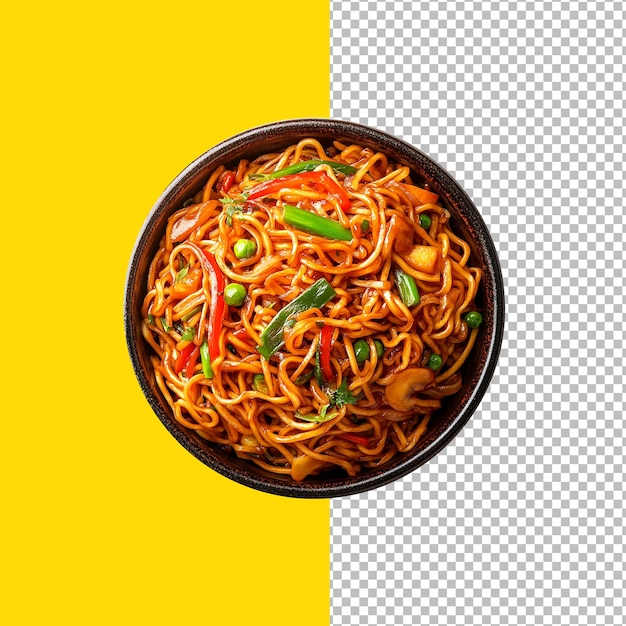

Home
NODDLES RECIPE

Description:
Noddle is among one of the most popular food that is extremely delicious and quick to make. There are different types of noddle.
This recipe just shows one of them and that is chicken noddle. I hope you will love it. It only takes few minutes to make.
ingredients
- Noddle
- chicken
- Egg
- Onion
- Chili
- salt
- Tomato
- Sauch
- Oil
Recipe:
- First prepare everything to cook
- Fry the onion and chili in medium heat and put the meat and add some salt and masalas and fry till it turns grey.
- When it's done, fry the eggs as little pieces and take em off the pan
- Now boil the water and put your noddles into the boiling water. Boil it for a minute or two then take it and wash it with cold water.
- Now take 2 table spoon oil and put some onion and chili and tomato in it.
- Add the boiled noddles and mix it properly
- Now put fried chicken and egg into the pan and mix them
- Add chatt masalas to your recipe to make it more delicious.
- Fry for some minutes and it is ready to serve.
- Happy Eating.